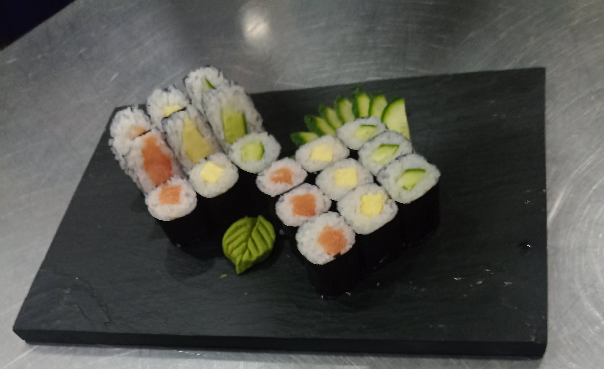
Colecciones y Recetas
17 recetas
Cocina Japonesa
8 recetasShari (Arroz para Sushi)
Base de arroz avinagrado: técnica de cocción de gohan y preparación del aderezo.
Ver receta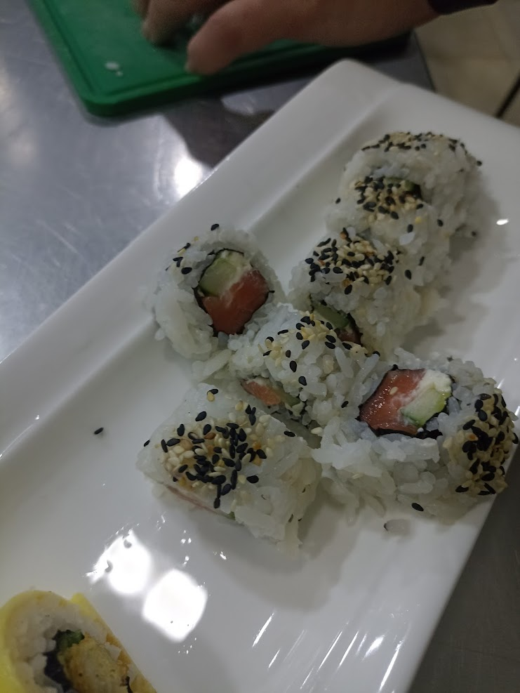
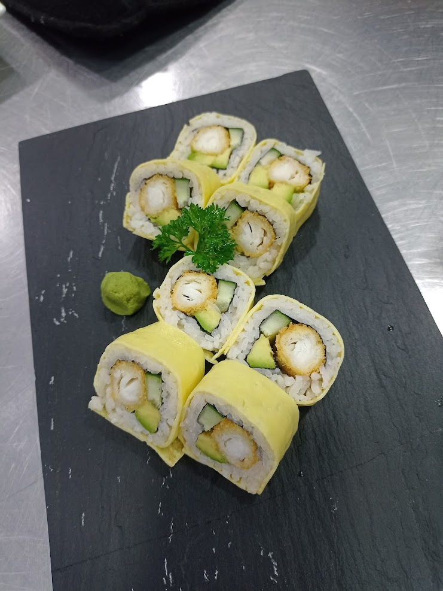
Garamaki
Roll crocante con lenguado en panko, espárragos, queso philadelphia y salsa de sésamo.
Ver receta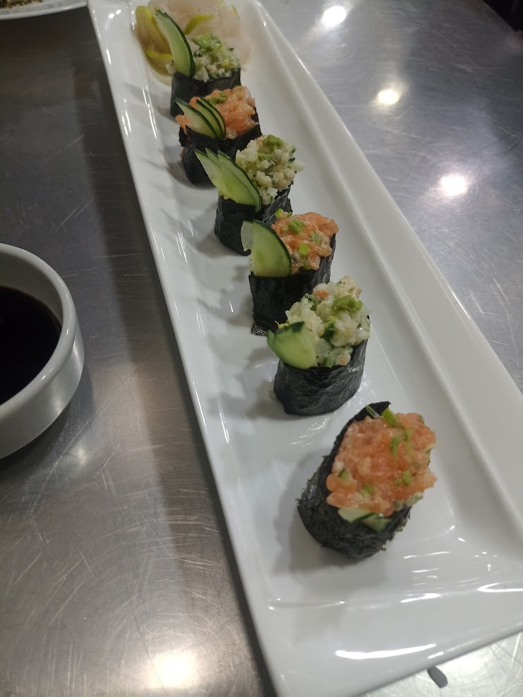
Gunkan Maki
Piezas en forma de barco envueltas en nori con caviar ikura, tartare de salmón o kanikama.
Ver receta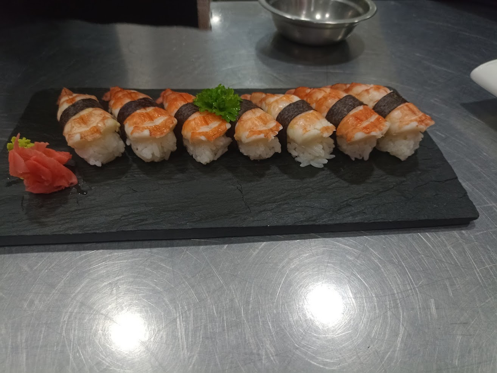
Niguiri y Sashimi de Salmón
Bollitos de arroz moldeados a mano con salmón y láminas de sashimi.
Ver receta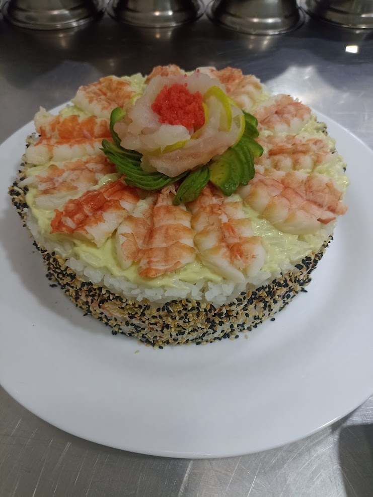
Sushi Cake de Langostinos
Torta salada en capas con langostinos al limón, pasta de salmón y flor de lenguado.
Ver recetaCocina Coreana (Hansik)
9 recetas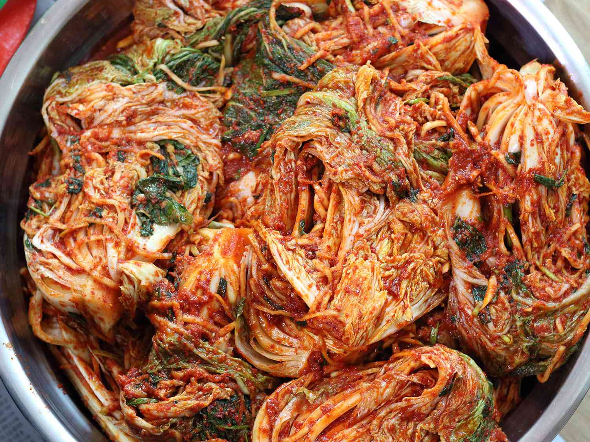
Clase de Kimchi y Kimjang
Cultura del Hansik, tradición comunitaria del Kimjang, beneficios para la salud y las 4 variedades tradicionales.
Ver colección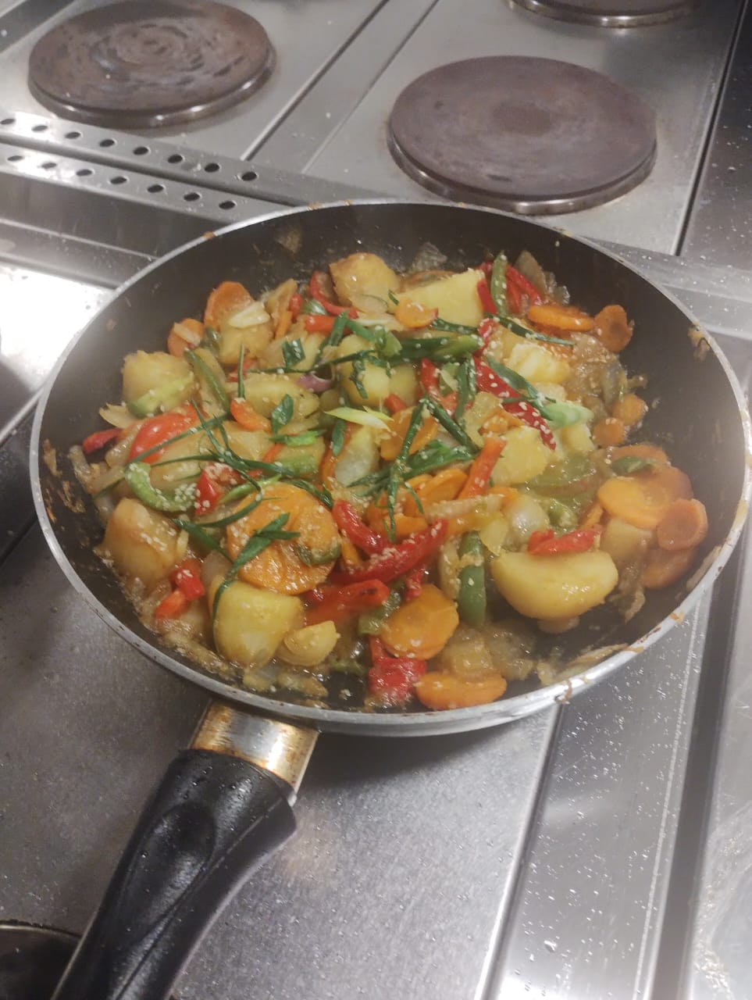
Banchan (Acompañamientos)
El corazón de la mesa coreana: variedad de platillos que acompañan al arroz en cada comida.
Ver colección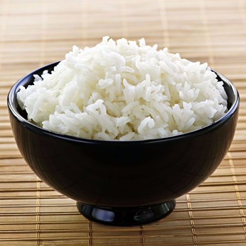
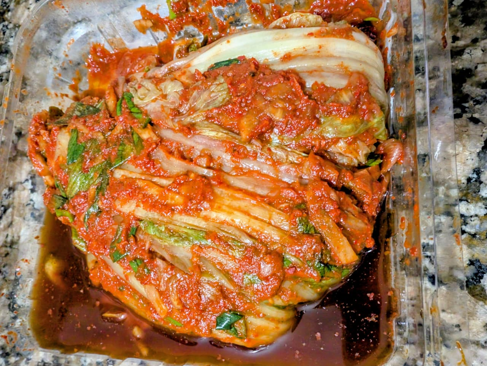
Bechu phogui kimchi
Kimchi tradicional de col (akusai) con salazón, engrudo de harina de arroz y pasta aromática de gochugaru.
Ver recetaKakdugui
Kimchi crocante de cubitos de nabo macerados con sal y azúcar, teñidos al gochugaru y sazonados con krill.
Ver receta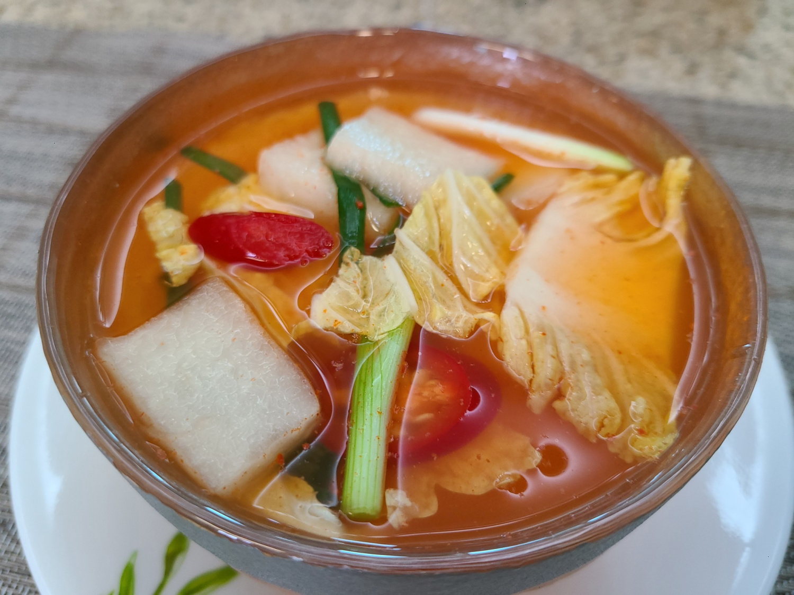
Nabak Kimchi
Kimchi refrescante de agua con láminas finas de nabo y baechu en caldo filtrado de gochugaru y jalapeño.
Ver receta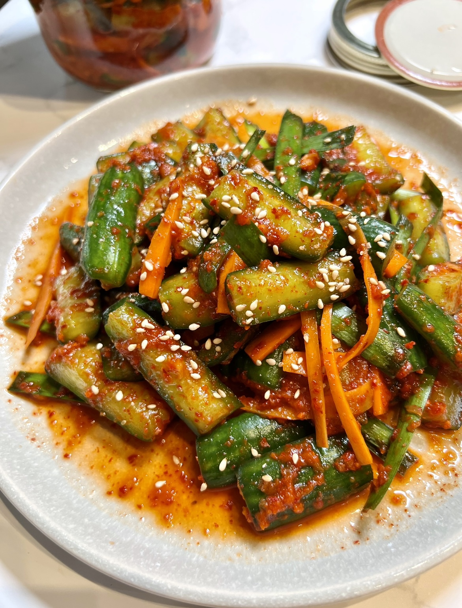
Oi kimchi
Pepinos cortados en flor y escaldados para conservar textura supercrocante, rellenos con nira, verdeo y zanahoria.
Ver receta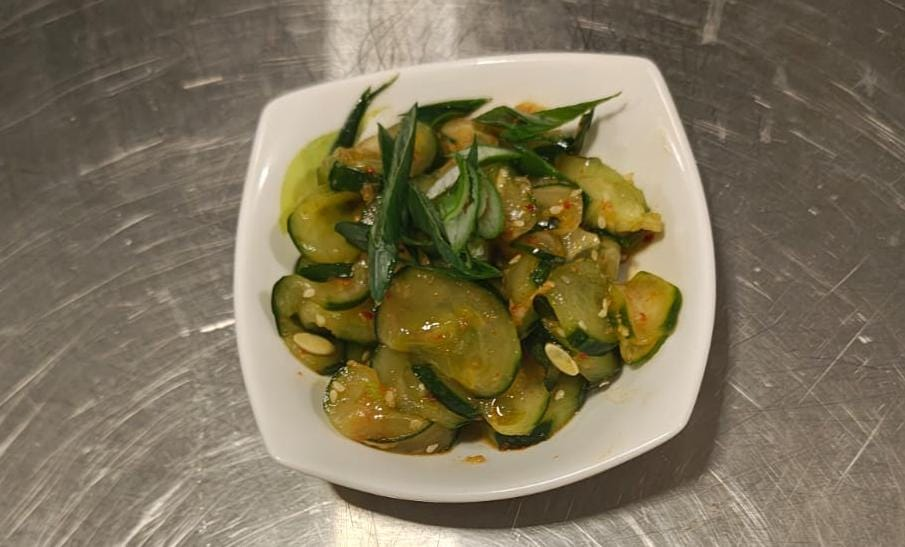
Oi Muchim
Ensalada rápida de pepino crujiente en rodajas finas condimentadas con gochugaru, salsa de soja, vinagre y sésamo.
Ver receta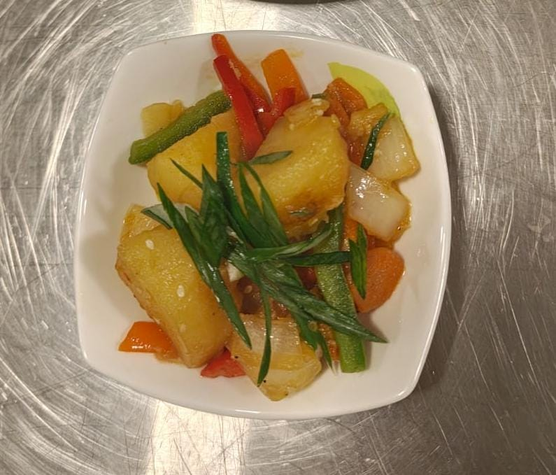
Gamja Jorim
Cubos de papa braseados en salsa reducida de soja, soju y jarabe de maíz con morrón, cebolla y aceite de sésamo.
Ver recetaNo se encontraron recetas
Prueba con otros términos de búsqueda.